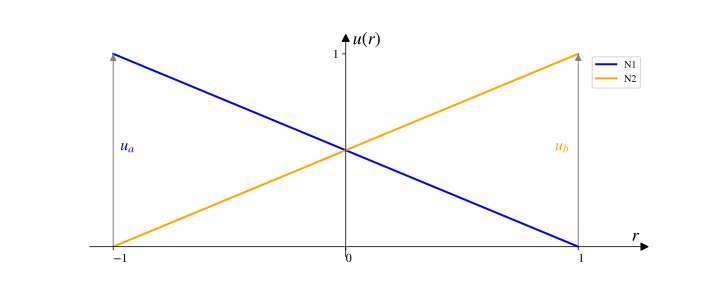
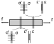

Elemento finito de treliça
Fundamentação
A ideia da idealização de uma estrutura em uma treliça é simples, supõe-se que em todas as barras apenas existam esforços axiais normais na sua direção longitudinal, que derivam de tensões uniformes nessa seção. Isso é verdade? Não! Principalmente próximo das ligações. Mas para determinadas estruturas essa idealização é representativa dos efeitos mecânicos reais em seus elementos e, portanto, válida para uma idealização. Essas estruturas chamamos de treliças.

Essa barra real com um certo volume em uma geometria qualquer tridimensional pode ser representada em uma idealização unidimensional para calculo de seus efeitos. Isso porque as tensões são consideradas uniformes na barra e algumas simplificações são adotadas, como a desconsideração dos efeitos de Saint-Venant ocorrerem em uma pequena região e não interferirem de forma relevante no resposta mecânica total da barra da estrutura) e as deformações transversais são desprezadas (por serem muito pequenas). Então, a barra da treliça se torna:
Saint-Venant
O Princípio de Saint-Venant estabelece que nas regiões localizadas próximo à aplicação de carga ou restrições, o nível de tensão na peça atinge valores elevados e difunde na medida em que se afasta dessas regiões,tendendo ao valor médio de tensão.
Deslocamentos
Daqui para frente, esquece a barra real da treliça, esquece a treliça real e nos focamos apenas na idealização unidimensional. Vimos na introdução (veja aqui) que analiticamente a deformação, ou a variação do deslocamento na direção longitudinal de uma barra unidimensional com material no regime elástico linear, é função da força aplicada dividida pela sua rigidez (AE) e que o deslocamento varia de forma linear na direção longitudinal com a posição na viga (r), ou seja:
Se fixarmos um referencial cartesiano $(r, u)$ no meio dessa barra, com $u$ sendo os deslocamentos na direção axial, podemos fazer um gráfico da variação desse deslocamento axial:
De uma forma bem simples, a ideia básica do método dos elementos finitos aplicados à estruturas é transformar essa barra com seus deslocamentos contínuos em $r$ em um elemento discreto com deslocamentos definidos apenas nos seus extremos ou nós, sendo os deslocamentos dentro desse elemento calculados através de uma interpolação dos deslocamentos nos nós ou nodais utilizando as chamadas funções de forma.
De outra forma, digamos que sabemos os valores dos deslocamentos nos nós desse elemento, sendo eles de valor qualquer $u_a$ e $u_b$ nos nós 1 e 2 respectivamente, e que, através deles, queremos calcular os deslocamentos em qualquer ponto desse elemento, entre os nós 1 e 2. Digamos ainda que esse elemento tem comprimento l. Voltando ao referencial $(r,s)$, temos:

Funções de forma
Sabendo que na idealização em barra de treliça unidimensional a variação dos deslocamentos é linear na barra, pode-se escrever a equação dessa variação linear em função de $u_a$ e $u_b$. Vamos pegar uma equação de uma reta genérica $s = A r + b$ e aplicar as seguintes condições para:
Portanto, substituindo essas condições na equação da reta genérica sendo $s = u(r)$:
E finalmente a equação da reta pode ser reescrita com os coeficientes $A$ e $B$ calculados:
Ou seja, através da interpolação dos deslocamentos também foi possível determinar o deslocamento em qualquer ponto r do elemento. Quer ver? Digamos que $l = 1m$, portanto da equação \eqref{deslTrel} temos que $r$ varia de $-\frac{1}{2}$ até $\frac{1}{2}$, então os deslocamentos nos extremos são $-\frac{f}{2AE}$ e $\frac{f}{2AE}$, que seriam os valores de $u_a$ e $u_b$ respectivamente. Substitua esses valores na \eqref{eqInterDeslTrelica}, o que você achou? $u(r)$ com $l=1$!
O problema agora é, quanto valem $u_a$ e $u_b$?
Vamos isolar $u_a$ e $u_b$ na equação \eqref{eqInterDeslTrelica}:
Que também pode ser escrita na forma matricial:
A porção entre os colchetes da equação \eqref{eqInterDeslTrelicaMat} é chamada matrix das funções de forma (também conhecidas como funções de interpolação), denominada por $\textbf{N}$, e a porção entre chaves são os chamados deslocamentos nodais, denominados por $\textbf{u}$. Portanto, a equação \eqref{eqInterDeslTrelicaMat} condensada é escrita como:
Essa equação de interpolação dos deslocamentos nodais em sua forma condensada é válida para qualquer elemento finito, seja o de treliça, de viga, de pórtico, de placa, de casca ou tridimensional, o que muda, obviamente, são as funções de forma na matriz $\textbf{N}$ e os deslocamentos nodais no vetor $\textbf{u}$. No nosso caso:

Graus de liberdade
Vamos ampliar um pouco a conceituação dentro das premissas do MEF introduzindo o conceito de grau de liberdade.
Os deslocamentos $u_a$ e $u_b$, dentro do conceito do MEF, são chamados de graus de liberdade. Os graus de liberdade, no MEF, são as possíveis direções de deslocamentos, rotações, velocidades, acelerações, entre outros, que podem ser discretizados em um nó em função de um sistema de coordenadas referencial, aos quais estão associadas funções de forma que "distribuem" os seus efeitos dentro de um determinado elemento (ou no domínio de um elemento). Ou seja, o nosso elemento representativo de uma barra de treliça plana possui 2 graus de liberdade!
Então, como determinar os valores de deslocamentos associados aos graus de liberdade $u_a$ e $u_b$?
Comentário
Esqueceu o que estamos fazendo? Lembra do problema? A ponte Wills Creek Bollman? Da sua idealização? Da simplificação em uma treliça de três barras para melhor controle? Então, é para 1 das barras dessa treliça que estamos montando uma formulação baseada nos conceitos do MEF para depois contruir matemáticamente a treliça e resolvê-la.
Resolução
Deformações
Como definimos de uma forma genérica o deslocamento em nosso elemento de treliça, equação \eqref{deslMEF}, podemos escrever o campo de deformações relacionado a esse deslocamento axial $u(r)$. Sabendo que as deformações são as variações do deslocamento em uma direção, no nosso caso na axial, $r$, escrevemos substituindo a equação \eqref{deslMEF} no lugar de u(r):
Pois, $u_a$ e $u_b$ são escalares e não variam em $r$. A matrix das derivadas das funções de forma na equação \eqref{campDef} é chamada de matriz $\textbf{B}$ em elementos finitos, e portanto, a equação \eqref{campDef} pode ser rescrita de uma forma condensada como:
Da mesma forma que a equação \eqref{deslMEF} a equação \eqref{campDefMEF} também é válida para qualquer elemento finito, seja o de treliça, de viga, de pórtico, de placa, de casca ou tridimensional, o que muda é a matriz das derivadas das funções de interpolação, $\textbf{B}$ e os graus de liberdade (ou deslocamentos) $\textbf{u}$.
Como no nosso caso:
Portanto:
Olha que bacana essa, vamos colocar esse resultado na equação \eqref{campDefMEF} e fazer a multiplicação:
Comentário
Lembra do conceito de deformação da mecânica dos materiais?! Variação do comprimento sobre o comprimento total. Muito bem! Estamos no caminho certo. Outra coisa, obseve que a deformação é um escalar (ou um tensor de ordem zero), o que vai facilitar mais para frente. Em outros elementos, como viga por exemplo, a deformação acaba sendo um tensor de ordem 1 (representado por um vetor) o que vai dificultar um pouco os cálculos, como veremos em vigas.
Equilíbrio
Agora precisamos colocar a nossa barra em equilíbrio, ou seja, todos os efeitos internos devem ser iguais aos efeitos externos, de outra forma, as tensões e deformações (internas) devem ser equivalentes às solicitações externas em seus efeitos, por exemplo trabalho, energia. Mas por que? Bem, estamos fazendo uma análise elástica linear estática considerando pequenas deformações, não queremos que nossa barra se movimente como um corpo rígido ou se deforme em excesso, nem que atuem sobre ela cargas que variam no tempo ou que perca energia através de algum processo dissipativo, além disso, desconsideramos os efeitos de amortecimento do material e da sua inércia, por se tratar de uma análise estática.
O equilíbrio das quantidades internas e externas nessas condições pode ser escrito através do Princípio dos Trabalhos Virtuais. Esse princípio, na mecânica dos sólidos, estabelece que o trabalho das forças internas (tensões), $W_i$ deve ser igual ao trabalho das forças externas (no nosso caso f), $W_e$. O trabalho é uma medida de energia gerada uma força ao longo de um deslocamento. Por exemplo, para uma força de 2 kN percorrer a distância de 10 cm a energia necessária é de 200 J (Joules), para percorrer 50 cm, a energia vale 1000 J. Então:
Princípio dos Trabalhos Virtuais
O princípio dos trabalhos virtuais estipula que o trabalho virtual das forças externas equivale ao trabalho virtual das forças internas. Neste contexto, a palavra virtual significa que as forças e os deslocamentos envolvidos podem não corresponder um ao outro, somente é necessário que as forças estejam estaticamente admissíveis e os deslocamentos cinematicamente admissíveis
O trabalho das forças internas, $W_i$, ou seja, o trabalho das tensões é calculando multiplicando essas tensões pelas suas respectivas deformações. O detalhe é que a cada pedacinho da barra existem tensões e deformações que podem ser variáveis de ponto a ponto na barra.

O trabalho interno total é a soma das tensões multiplicadas pelas deformações em todo o volume (V) da barra da treliça, portanto:
O trabalho das forças externas é mais simples, como aplicamos apenas $f$ na direção longitudinal da barra, ainda não discretizada em MEF, e essa se deslocou $u(r)$, então:
Após a discretização em um elemento de treliça as cargas aplicadas ficam concentradas nos nós, portanto o trabalho externo pode ser substituido pelo trabalho dessas forças multiplicadas pelo respectivo deslocamento do nó, ou seja:
Que, como estamos trabalhando com treliça e somente aplicamos cargas nos extremos de cada barra, podemos escrever o vetor de cargas nodais equivalentes da seguinte forma:
Sendo $f_a$ a força no nó 1 e $f_b$ a força no nó 2.
O detalhe aqui é que tanto $\varepsilon$ quanto $u(r)$, que é o deslocamento em todos os pontos da barra, estão em equilíbrio, mas não sabemos quanto valem nem como mantém o sistema em equilíbrio. Para testar o equilíbrio desse sistema vamos perturbar ele, partindo de zero deslocamentos e perturbando com deslocamentos imaginários ou virtuais nos nós de $\delta u_a$ e $\delta u_b$. Visualize você puxando um pedaço de elástico e soltado é isso que pretendemos fazer matematicamente.
Sendo assim, nossa deformação virtual, dada pela equação \eqref{campDef}, se escreve:
E o deslocamento virtual total $u(r)$:
Substituindo esses valores respectivamente nas equações \eqref{enerInt} e \eqref{engExtF} e fazendo o equilíbrio, equação \eqref{eqEner}, chegamos à:
Como estamos trabalhando com nosso material utilizando apenas o seu limite elástico, ou seja, o valor das tensões e deformações não podem ser maiores que as limites para esse regime, $\sigma \leq \sigma_{lim}$ e $\varepsilon \leq \varepsilon_{lim}$.

Além disso, como as tensões são proporcionais às deformações, podemos escrever que:
Observe que no caso da barra de treliça, pelo fato das tensões e deformações serem constantes ao longo da barra, $\sigma$ e $\varepsilon$ são escalares (ou tensores de ordem zero). Aliás, $E$ também é um escalar (ou tensor de ordem zero) por estarmos trabalhando com a resposta mecânica do material em apenas uma direção.
Comentário
Mas que tanto é esse negócio de tensor que fica aparecendo no texto?! Tensores são transformações lineares de quantidades mecânicas (outras também, mas no nosso caso são mecânicas), que podem ser representados matematicamente como escalares, tensores de ordem zero, vetores, tensores de ordem 1 e matrizes, tensores de ordem 2 e existem ainda tensores de ordem 3, 4 e superiores, que somente se representam através da notação indicial de Einstein.
Notação indicial de Einstein
A notação indicial é uma forma compacta de se representar e manipular sistemas de equações, combinações lineares e somatórios. Foi introduzida por Einstein para denotar grandezas em espaços de dimensão superior a 3.
Dessa forma, substituindo o valor de $\sigma$ da equação \eqref{tensDef} na equação \eqref{eqParc}:
Como em nosso problemas estamos discretizando utilizando MEF, substituimos a deformação $\varepsilon$ pela equação \eqref{campDefMEF}:
Comentário
Como?! Então, os vetores $\delta \textbf{u}^T$ e a matriz $\textbf{B}^T$ são exatamente iguais à $\delta \textbf{u}$ e a matriz $\textbf{B}$, mas transpostos para que a multiplicação matricial seja possível. Assim, $\delta \textbf{u}$ é um vetor 2x1, assim como $\textbf{u}$, $\textbf{B}$ é matriz 1 r 2, para conseguirmos multiplicar essas quantidades precisamos posicioná-los na equação de forma que a multiplicação matricial seja possível. Uma das formas de se organizar na equação é a apresentada, veja como ficaria na equação acima: 1x2 * 2x1 * 1x1 * 1x2 * 2x1 = 1x1, perfeito! Certo, como você chama $\textbf{B}$ de matriz se $\textbf{B}$ tem as dimensões de um vetor? Apenas para acostumar com a notação pois para elementos mais complexos $\textbf{B}$ de fato será uma matriz, na verdade, um tensor de ordem 2.
Como os deslocamentos $\delta \textbf{u}$ e $\textbf{u}$ não dependem do volume da barra, podemos retirá-los da integral.
E, como $\delta \textbf{u}$, os deslocamentos quaisquer que utilizamos para perturbar a barra, são os mesmos em ambos os lados da equação, chegamos ao equilíbrio da nossa barra.
Que, em MEF, chamamos de equilíbrio estático e escrevemos de forma condensada como:
Sendo:
Sendo a integral no volume conhecida como matriz de rigidez do elemento $\textbf{k}$ e $\textbf{f}$ o vetor de forças nodais equivalentes.
Matriz de rigidez do elemento de treliça
Podemos abrir a integral em uma integral na área e outra no comprimento. Como nada varia em $s$ ou $z$, a integral na área é a própria área da seção transversal.
Substituindo os valores de $\textbf{B}$, realizando as multiplicações matriciais e resolvendo a integral, considerando que o módulo de elasticidade é constante no comprimento da barra:
Por fim, de forma condensada:
Sendo:
O problema dessa matriz de rigidez é que ela está escrita somente para um elemento disposto na horizontal na direção do eixo r. E se o nosso elemento for inclinado? Como ficam os graus de liberdade? Existe uma componente em s?

Comentário
A seta na imagem não significa força, é a direção do grau de liberdade a ou b!!! Seta preta, força, seta cinza grau de liberdade.
A matriz de rigidez que calculamos foi determinada utilizando um sistema de coordenadas disposto no elemento, com origem em seu centro e orientação do eixo r no sentido longitudinal da barra. A esse sistema damos o nome de sistema local de coordenadas $(r,s)$.
Quando vamos resolver uma estrutura precisamos de outro sistema de coordenadas que englobe todos os elementos dessa estrutura para que todos tenham o mesmo referencial, a esse sistema chamamos de global $(X, Y)$.
Portanto, para obter a matriz de rigidez do elemento no sistema global de coordenadas para podemos resolver a estrutura da treliça completa, precisamos aplicar uma transformação de coordenadas e uma rotação, caso o elemento não seja horizontal.
Matriz de rigidez no sistema global
Primeiro, precisamos escrever os graus de liberdade no sistema global e reposicionar as suas rigidezes na matriz de rigidez, pois no sistema local, o elemento possui apenas 1 graus de liberdade por nó, já no global, terá 2 pois cada nó poderá se mover dentro do plano definido por $(X,Y)$. Esses 2 graus de liberdade nada mais são que a decomposição do grau de liberdade nas coordenadas globais.

Comentário
Note que na figura o comprimento do elemento é definido por L. Na simbologia deste material, L representa o comprimento do elemento no sistema global e l no sistema local. Mas, no caso do elemento de treliça e especificamente para a formulação apresentada nesta seção (treliça plana) L e l são o mesmo (L = l). Mais para diante, com elementos mais complexos teremos a necessidade de trabalhar com diferentes tamanhos de elementos no sistema local e depois compatibilizar com o sistema global.
Observe que se aplicarmos uma força concentrada qualquer $f$ na direção do grau de liberdade a seu efeito nos graus de liberdade A e B em uma barra inclinada em $\theta$ graus em relação ao eixo global X, será respectivamente $f \ cos \ \theta$ e $f \ sen \ \theta$, ou seja, simplesmente a decomposição da força da direção r para a direção X. Isso vale para quaisquer efeitos na direção r no nó 1 ou 2 da barra.
Sendo assim, podemos rescrever nosso vetores de deslocamentos do elemento $\textbf{u}$ e de forças nodais concentradas do elemento $\textbf{f}$ no sistema global utilizando uma matriz de decomposição $\textbf{D}$, definida com os senos e cossenos do ângulo da barra:
Ou, de forma contrária, escrevendo os deslocamentos locais em função dos globais:
Com a matriz de decomposição $\textbf{D}$ sendo:
Observe que os vetores de deslocamentos e forças nodais globais, $\textbf{u}_g$ e $\textbf{f}_g$, são de 4x1 representando os 2 graus de liberdade por nó do elemento no sistema global:
Agora, precisamos corrigir a matriz de rigidez do elemento já que, com 2 graus de liberdade por nó, deverá ser de 4x4 e não somente de 2x2 como a determinada. Para tal, vamos partir da equação matricial de equilíbrio estático \eqref{equilibroEstatico} substituindo as quantidades locais pelas globais calculadas com a matriz de decomposição $\textbf{D}$ das equações \eqref{uug} e \eqref{ffg}:
Multiplicando ambos os lados por $\textbf{D}$:
Ou de forma compacta:
Sendo:
Veja que a multiplicação de $\textbf{D}$, $\textbf{D}^T$ e $\textbf{f}_g$ resulta no próprio $\textbf{f}_g$:
Substituindo na equação \eqref{ddt} a equação \eqref{forcasLdecom}, que descreve a decomposição dos graus de liberdade locais nos globais do vetor de forças nodais equivalentes:
Comentário
Esquisito isso... mas fechou direitinho e com lógica tanto física quanto matemática. Muitos livros de elementos finitos expandem a matriz do elemento no sistema local para uma matriz 4x4 com linhas e colunas com zeros onde seriam os graus de liberdade transversais e obtém a matriz de rigidez no sistema global com multiplicações pela matriz de rotação de vetores. A forma apresentada aqui é mais elegante e consistente.
Por fim, nos resta calcular a matriz de rigidez no sistema glonal, equação \eqref{rigidezGlobalDDt}. Fazendo a multiplicação primeiro de $\textbf{D}$ por $\textbf{k}$ e depois do resultado $\textbf{D} \ \textbf{k}$ por $\textbf{D}^T$, chega-se a matriz de rigidez do elemento de treliça de dois nós no sistema global (X,Y) de coordenadas:
E agora?! Agora é hora de voltar a treliça de três barras e resolvê-la na mão na aplicação na mão